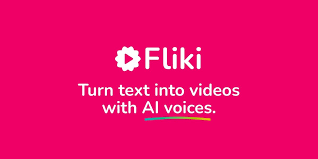

Con Fliki puedes crear vídeos con voces generadas por inteligencia artificial, ideal para narraciones, tutoriales y presentaciones. También puedes generar contenido para redes sociales de manera rápida y profesional.
La herramienta de inteligencia artificial de texto a video de Fliki le permite generar una amplia gama de videos para diversos propósitos. Puede generar videos educativos, explicaciones, demostraciones de productos, contenido de redes sociales, videos de YouTube, Tiktok Reels y anuncios de video.
La cantidad de videos que puedes crear en Fliki depende del plan que elijas. En el plan gratuito, tienes un límite mensual de minutos, mientras que en los planes de pago el límite es mucho mayor.
Para hacer un vídeo con voz IA gratis en Fliki, solo necesitas registrarte en su plataforma, elegir una plantilla, escribir el texto que quieres narrar y seleccionar una voz de su catálogo. ¡El resto lo hace Fliki por ti!
